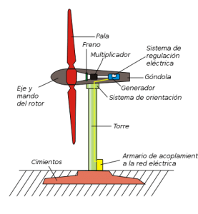

¿Qué es la energía eólica?

La energía eólica es la energía que se obtiene del viento. Se trata de un tipo de energía cinética
producida por el efecto de las corrientes de aire. Esta energía la podemos convertir en
electricidad a través de un generador eléctrico. Es una energía renovable, limpia, que no
contamina y que ayuda a reemplazar la energía producida a través de los combustibles fósiles.
El mayor productor de energía eólica del mundo es Estados Unidos, seguido de Alemania, China,
India y España. En América Latina el mayor productor es Brasil. En España, la energía eólica
abasteció de electricidad al equivalente a 12 millones de hogares, esto es un 18% de las
necesidades del país.
¿Cómo funciona la energía eólica?
La energía eólica se obtiene al convertir el movimiento de las palas de un aerogenerador en
energía eléctrica. Un aerogenerador es un generador eléctrico movido por una turbina accionada
por el viento, sus predecesores son los molinos de viento.
Un aerogenerador lo conforman la torre; un sistema de orientación ubicado al final de la torre, en
su extremo superior; un armario de acoplamiento a la red eléctrica pegado a la base de la torre;
una góndola que es el armazón que cobija los componentes mecánicos del molino y que sirve
de base a las palas; un eje y mando del rotor por delante de las palas; y dentro de la góndola, un
freno, un multiplicador, el generador y el sistema de regulación eléctrica.

Turbina Eolica